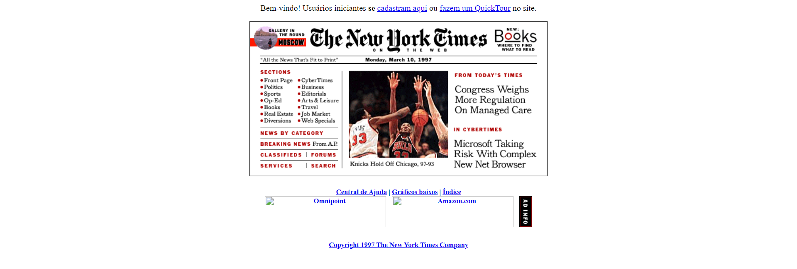
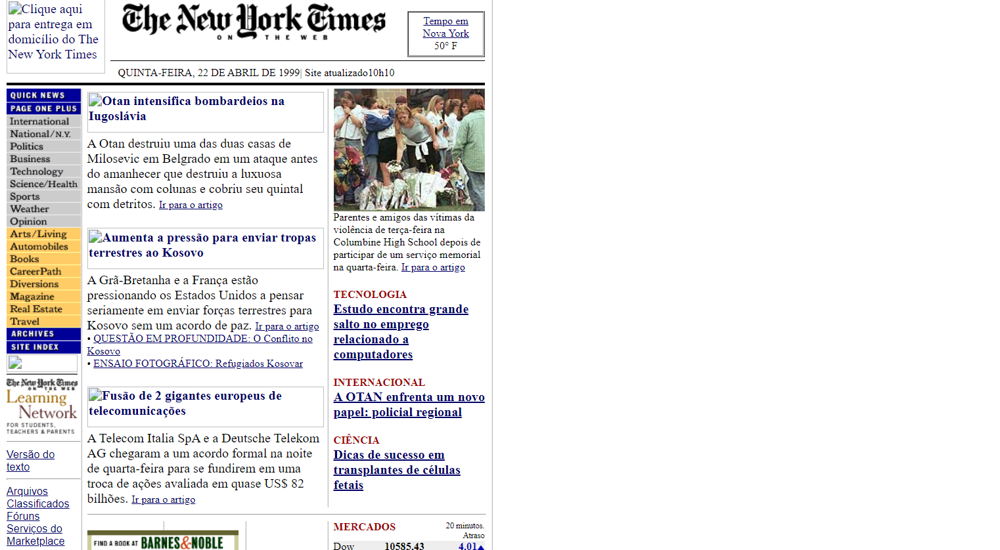
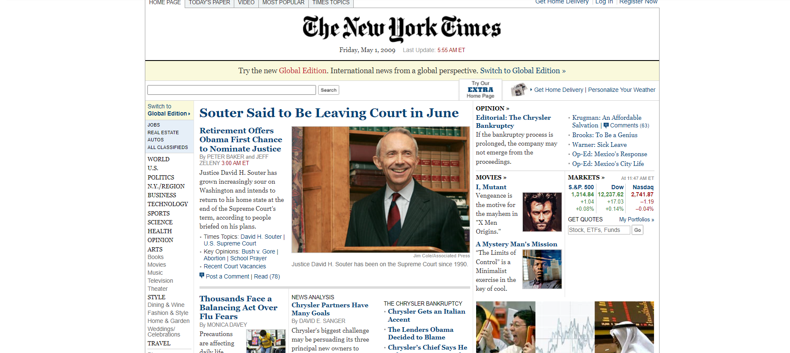
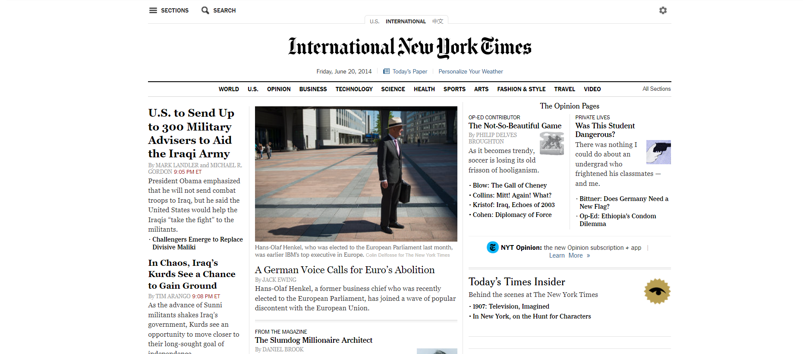

Qual era o o propósito inicial do site?
A propósta inicial ao meu ver, era deixar o conteúdo mais parecido possível com os jornais de papel da época.A interface era simples e o conteúdo parecia com uma fotografia. Também podemos notar que não existia uma grande preocupação com a aparência do site.

O propósito do site mudou ao longo do tempo?
Com o passar dos anos, conseguimos perceber um cuidado maior com a aparência do site. O conteúdo foi organizado para acrescentar novas notícias envolvendo esporte, ciências, clima, acontecimentos internacionais, etc.
Em 2009, todo o conteúdo foi centralizado, manteram as propagandas como em 2004, e capricharam no estilo visual, utilizando cores mais harmoniosas e deixando os links externos visualmente agradáveis.
A partir de 2014, foram retiradas as bordas laterais que delimitavam o conteúdo, e ele seguiu até hoje sem essa demarcação, dando a impressão de que a borda do jornal é a própria tela do computador.
Quais os problemas que esse site tinha quando "novo" e quais têm agora?
Quando novo, o site fazia muita alusão ao jornal impresso, parecia uma foto, e faltava conteúdos mais planejados. Hoje, acompanhamos um site com conteúdos excepcionais, mas criticado quanto a veracidade de suas matérias, além de ter se notado menos adesão ao site em relação aos anos anteriores.
Que melhorias você faria nesse site para que ele pudesse ser mais interessante para um público jovem, de periferia, que não está acostumado ao uso de Internet por computadores e não tem interesses por notícias?
A desinformação é catastrófica para o desenvolvimento do país, em vista disso, poderia criar uma página voltada para os usuários pesquisarem por notícias que eles não tem certeza quanto a sua autenticidade. Também é interessante que tenham mais notícias quanto a tecnologia da informação, e o mundo dos video games.